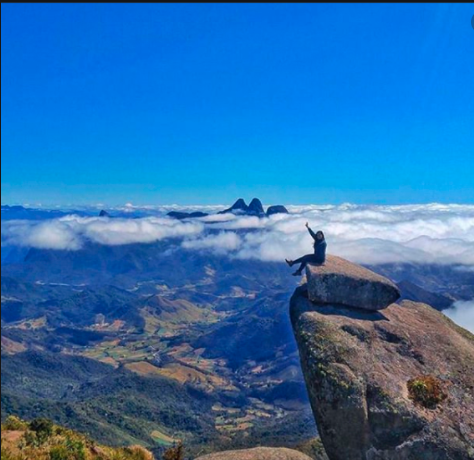
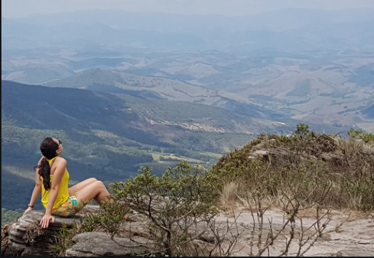
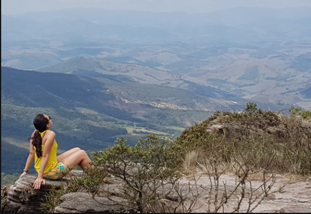
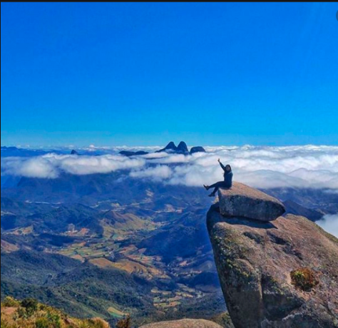
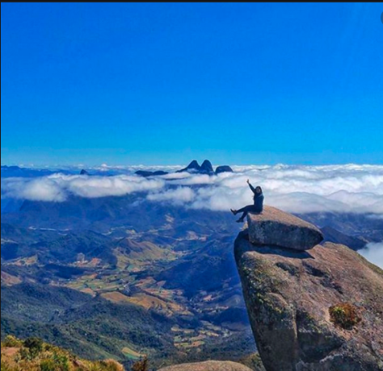

Capitólio -MG Capitólio é conhecida como o mar de Minas, por conta de suas muitas
águas e lagos.
O Lago de Furnas é uma das principais atrações da região, que possui ainda muitos atrativos naturais.
A cidade fica localizada entre a Serra da Canastra e o Lago de Furnas....
Ouro Preto -MG Famosa pela sua importância histórica, a cidade de Ouro Preto também
encanta pela beleza de suas construções e ruas de pedra.
Você só precisa estar preparado para as caminhadas nas longas ladeiras da cidade ....
Ibitipoca -MG
Conceição de Ibitipoca é um dos lugares turísticos mais visitados e não é a toa.
O parque das águas possui diversas belezas naturais e estonteantes, como a famosa Janela do Céu ....
Gonçalves - MG Essa pequena cidade fica na região de Pouso Alegre e guarda muitas
atrações, como cachoeiras e montanhas. Está localizada bem no meio da Serra da Mantiqueira,
perto de São Paulo, e você pode fazer trilhas em muitas das paisagens locais, como a Pedra do Forno..
SERRA DA MANTIQUEIRA - MINAS GERAIS

é uma cadeia montanhosa que se estende por três estados do Brasil: São Paulo, Minas Gerais e
Rio de Janeiro.
A serra tem uma formação geológica datada da era arqueana que compreende um maciço rochoso que possui grande
área de terras altas,
entre mil e quase três mil metros de altitude, ao longo das divisas dos estados de Minas Gerais, São Paulo e
Rio de Janeiro.
Na serra da Mantiqueira existem diversas unidades de conservação, como a área de proteção ambiental serra da
Mantiqueira,
dividida entre os três estados, o Parque Nacional do Itatiaia, dividido entre Minas e Rio, e os parques
estaduais da serra
do Brigadeiro e da serra do Papagaio (Minas) e Campos do Jordão (São Paulo).
São Thomé das Letras
Essa pequena cidade tem uma fama mística, com muitas lendas locais. Ela fica no alto da serra,
e possui a famosa Pedra de São Thomé, um sedimento mineral de quartzito, matéria-prima de muitos dos artesanatos
locais.
Carrancas - MG Por fim, a sugestão é Carrancas, um dos recentes pólos de eco turismo
da região de Minas Gerais. O Complexo da Zilda é um dos mais famosos pontos turísticos, guardando lagos e
cachoeiras de tirar o fôlego..
Serra do Cipó - MG Um dos pontos turísticos mais famosos de Minas Gerais, a Serra do Cipó
fica na região de Belo Horizonte e merece uma visita daqueles apaixonados por cachoeiras. Você pode visitar o
Parque Nacional, na zona rural, e encontrar diversas atrações. Só fique
atento ao horário de visitação do parque, que tem um número restrito de visitantes por dia para a preservação local.


 


 
